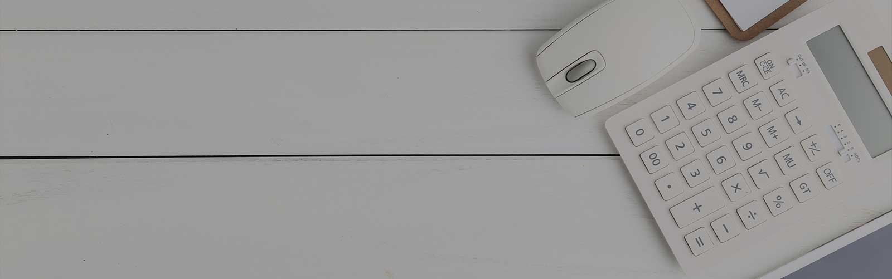

Incepand cu ianuarie 2006 AVI Moldova implementeaza proiecul YTNF (Youth Trascending New Frontiers) – Tinerii Depasind Noile Frontieri impreuna cu alte 5 organizatii: New Group Belarus, SVIT Ukraine, SCG Russia, SCI Germany, OWA Poland. Ideea proiectului este de a mobiliza tineri din diferite medii sociale care s-ar implica in 3 campuri de activitati: dreprurile omului si educatie, lupta anti-rasism si xenofobie, incluziune sociala a minoritatilor. 2007 incepe cu un nou proiect impreuna cu SVIT-Ukraine, care prevede crearea a 2 centre de coordonare a voluntarilor pe termen lung precum si instruirea mentorilor pentru acestia. |
| “MetronLab” SRL este laborator de verificări metrologice acreditat de Centrul Național de Acreditare MOLDAC în conformitate cu cerinţele standardului SM SR EN ISO/CEI 17020:2013 şi desemnat de către Autoritatea Centrală de Metrologie şi Ministerul Economiei şi Infrastructurii Calităţii pentru a efectua verificări metrologice iniţiale, periodice şi după reparaţie. |
|  |
| Suntem o companie integrată și independentă, specializată în furnizarea serviciilor de contabilitate, salarizare, consultanță fiscală, financiară și juridică. Oferim asistență antreprenorilor și micilor companii, investitorilor privați și organismelor publice în fiecare etapă a dezvoltării lor. |